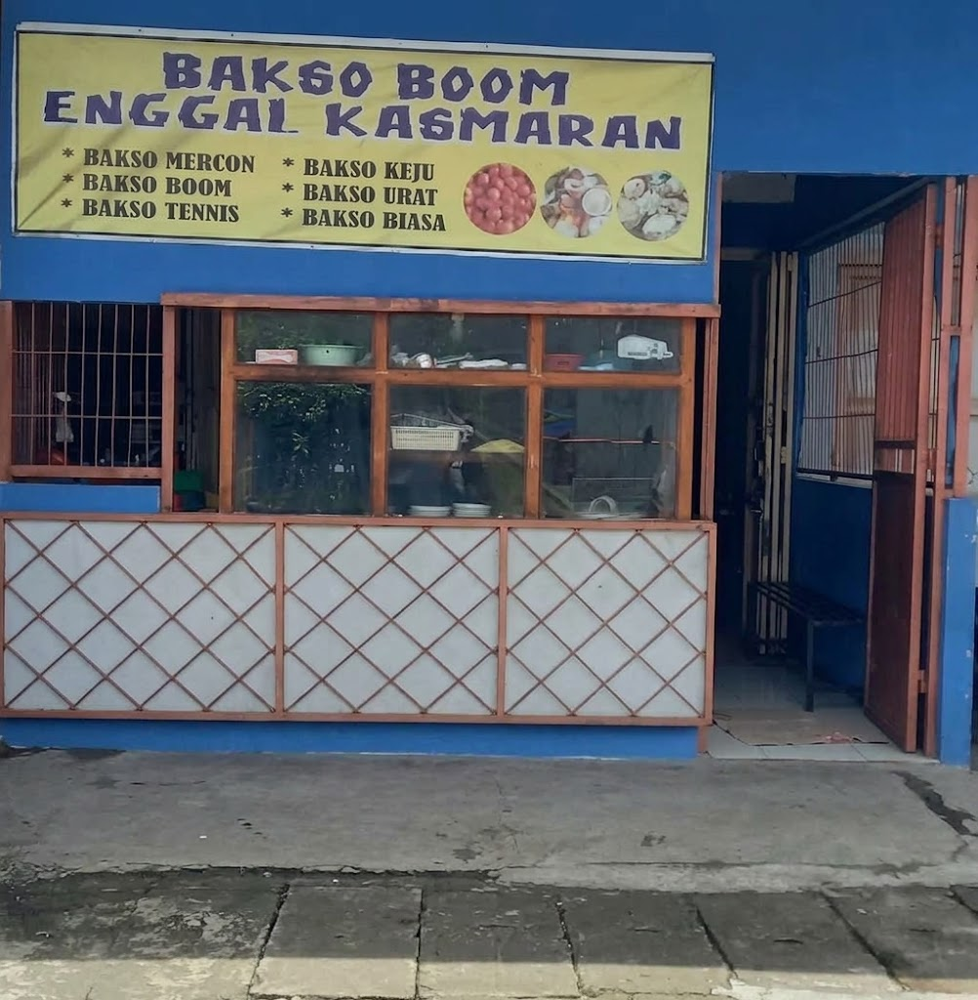
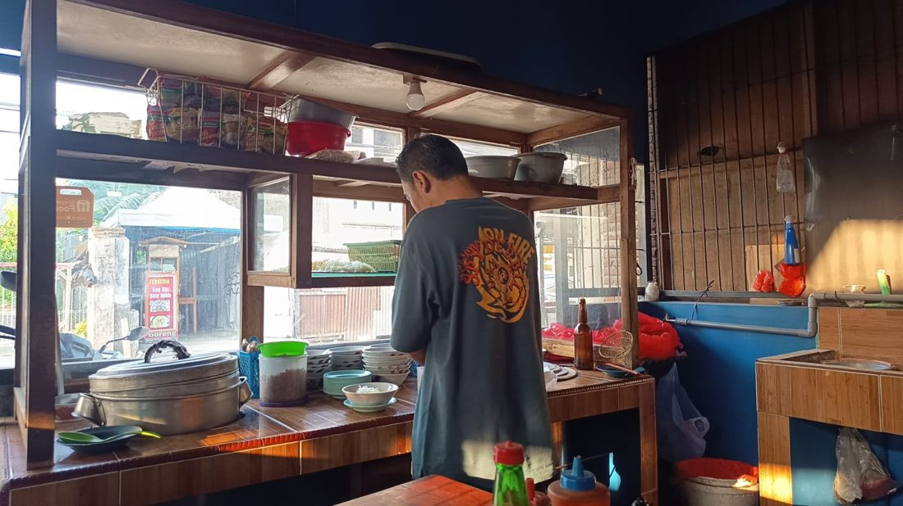

Jam buka
10.00 – 22.00 WITA
Datang langsung ke warung.
Mie bakso & mie pangsit
Semangkuk mie bakso dan mie pangsit hangat, mulai dari Rp12.000. Buka 10.00 – 22.00 WITA.

10.00 – 22.00 WITA
Datang langsung ke warung.
Mulai 50 porsi
Cocok untuk arisan, syukuran, dan acara kantor.
Tunai & QRIS
Bayar bisa dengan tunai, untuk metode QRIS lewat aplikasi bank atau e-wallet apa saja.

